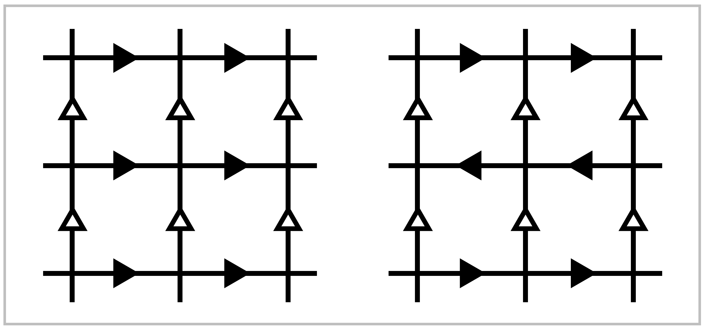

Deck Transformations and Group Actions#
For a covering space \(p:\tilde{X} \rightarrow X\) the isomorphisms \(\tilde{X} \rightarrow \tilde{X}\) are called deck transfor mations or covering transformations. These form a group \(G(\tilde{X})\) under composition. For example, for the covering space \(p: \mathbb{R} \rightarrow S^1\) projecting a vertical helix onto a circle, the deck transformations are the vertical translations taking the helix onto itself, so \(G(\tilde{X}) \approx \mathbb{Z}\) in this case. For the \(n\)-sheeted covering space \(S^1 \rightarrow S^1,\, z \mapsto z^n\), the deck transformations are the rotations of \(S^1\) through angles that are multiples of \(2\pi / n\), so \(G(\tilde{X})=\mathbb{Z}_n\).
By the unique lifting property, a deck transformation is completely determined by where it sends a single point, assuming \(\tilde{X}\) is path-connected. In particular, only theidentity deck transformation can fix a point of \(\tilde{X}\).
A covering space \(p:\tidle{X} \rightarrow X\) is called normal if for each \(x \in X\) and each pair of lifts \(\tilde{x},\tilde{x}'\) of \(x\) there is a deck transformation taking \(\tilde{x}`to :math:\)tilde{x}’. For example, the covering space :math:mathbb{R} rightarrow X^1` and the \(n\)-sheeted covering spaces \(S^1 \rightarrow S^1\) are normal. Intuitively, a normal covering space is one with maximal symmetry. This can be seen in the covering spaces of \(S^1 \vee S^1\) shown in the talbe earlier in this section, where the normal covering spaces are (1),(2),(5)-(8), and (11). Note that in (7) the group of deck transformations is \(\mathbb{Z}_4\) while in (8) it is \(\mathbb{Z}_2 \times \mathbb{Z}_2\).
Sometimes normal covering spaces are called regular covering spaces. The term ‘normal’ is motivated by the following result.
Proposition 1.39. Let \(p:(\tilde{X}, \tilde{x}_0) \rightarrow (X, x_0)\) be a path-connected covering space of the path-connected, locally path-connected space \(X\), and let \(H\) be the subgroup \(p_*(\pi_1(\tilde{X},\tilde{x}_0)) \subset \pi_1(X,x_0)\). Then:
This covering space is normal iff \(H\) is a normal subgroup of \(\pi_1(X,x_0)\).
\(G(\tilde{X})\) is isomorphic to the quotient \(N(H)/H\) where \(N(H)\) is the normalizer of \(H\) in \(\pi_1(X,x_0)\).
In particular, \(G(\tilde{X})\) is isomorphic to \(\pi_1(X,x_0)/H\) if \(\tilde{X}\) is a normal covering. Hence for the universal cover \(\tidle{X} \rightarrow X\) we have \(G(\tilde{X}) \approx \pi_1(X)\).
Proof: We observed earlier in the proof of the classification theorem that changing the basepoint \(\tilde{x}_0 \in p^{-1}(x_0)\) to \(\tilde{x}_1 \in p^{-1}(x_0)\) corresponds precisely to conjugating \(H\) by an element \([\gamma] \in \pi_1(X,x_0)\) where \(\gamma\) lifts to a path \(\tilde{\gamma\) from \(\tilde{x}_0\) to \(\tilde{x}_1\). Thus \([\gamma]\) is in the normalizer \(N(H)\) iff \(p_*(\pi_1(\tilde{X},\tilde{x}_0))=p_*(\pi_1(\tilde{X},\tilde{x}_1))\), which by the lifting criterion is equivalent to the existence of a deck transformation taking \(\tilde{x}_0\) to \(\tilde{x}_1\). Hence the covering space is normal iff \(N(H) = \pi_1(X,x_0)\), that is, iff \(H\) is a normal subgroup of \(\pi_1(X,x_0)\).
Define \(\varphi : N(H) \rightarrow G(\tilde{X})\) sending \([\gamma]\) to the deck transformation \(\tau\) taking \(\tilde{x}_0\) to \(\tilde{x}_1\), in the notation above. Then \(\varphi\) is a homomorphism, for if \(\gamma'\) is another loop corresponding to the deck transformation \(\tau '\) taking \(\tilde{x}_0\) to \({x}_1'\) then \(\gamma \cdot \gamma'\) lifts to \(\tilde{\gamma} \cdot (\tau(\tilde{\gamma}'))\), a path from \(\tilde{x}_0\) to \(\tau(\tilde{x}_1')=\tau \tau'(\tilde{x}_0)\), so \(\tau \tau'\) is the deck transformation corresponding to \([\gamma][\gamma']\). By the preceding paragraph \(\varphi\) is surjective. Its kernel consists of classes :math:[gamma] lifting to loops in \(\tilde{X}\). These are exactly the elements of \(p_*(\pi_1(\tilde{X},\tilde{x}_0))= H\). ◻
The group of deck transformations is a special case of the general notion of ‘groups acting on spaces’. Given a group \(G\) and a space \(Y\), then an action of \(G\) on \(Y\) is a homomorphism \(\rho\) from \(G\) to the group Homoe(\(Y\)) of all homeomorphisms from \(Y\) to itself. Thus to each \(g \in G\) is associated a homeomorphisms \(\rho(g): Y \rightarrow Y\), which for notational simplicity we write simply as \(g:Y \rightarrow Y\). For \(\rho\) to be a homomorphism amounts to requiring that \(g_1(g_2(y)) = (g_1g_2)(y)\) for all \(g_1,g_2 \in G\) and \(y \in Y\). If \(\rho\) is injective then it identifies \(G\) with a subgroup of Homeo(\(Y\)), and in practice not much is lost in assuming \(\rho\) is an inclusion \(G \hookrightarrow`Homeo(:math:`Y\)) since in any case the subgroup \(\rho(G) \subset \text{Homeo}(Y)\) contains all the topological information about the action.
We shall be interested in actions satisfying the following condition:
- (\({\Large *}\)) Each \(y \in Y\) has a neighborhood \(U\) such that all the images \(g(U)\) for varying
\(g \in G\) are disjoint. In other words, \(g_1(U) \cap g_2(U) \neq \emptyset\) implies \(g_1 = g_2\).
The action of the deck transformation group \(G(\tilde{x})\) on \(\tilde{X}\) satisfies (\({\Large *}\)). To see this. let \(\tilde{U} \subset \tilde{X}\) project homeomorphically to \(U \subset X\). If \(g_1(\tilde{U}) \cap g_2(\tilde{U}) \neq \emptyset\) for some \(g_1,g_2 \in G(\tilde{X})\), then \(g_1(\tilde{x}_1)=g_2(\tilde{x}_2)\) for some \(\tilde{x}_1,\tilde{x}_2\in \tilde{U}\). Since \(\tilde{x}_1\) and \(\tilde{x}_2\) must lie in the same set \(p^{-1}(x)\), which interesects \(\tilde{U}\) in only one point, we must have \(\tilde{x}_1=\tilde{x}_2\). THen \(g_1^{-1}g_2\) fixes this point, so \(g_1^{-1}g_2 = \mathbb{1}\) and \(g_1 = g_2\).
Note that in (\({\Large *}\)) it suffices to take \(g_1\) to be the identity since \(g_1(U) \cap g_2(U) \neq \emptyset\) is equivalent to \(U \cap g_1^{-1}g_2(U) \neq \emptyset\). Thus we have the equivalent condition that \(U \cap g(U) \neq \emptyset\) only when \(g\) is the identity.
Given an action of a group \(G\) on a space \(Y\), we can form a space \(Y/G\), the quotient space of \(Y\) in which each point \(y\) is identified with all its images \(g(y)\) as \(g\) ranges over \(G\). The points of \(Y/G\) are thus orbits \(Gy = \{g(y) \mid g \in G\}\) in \(Y\), and \(Y/G\) is called the orbit space of the action. For example, for a normal covering space \(\tilde{X} \rightarrow X\), the orbit space \(\tilde{X}/G(\tilde{X})\) is just \(X\).
Proposition 1.40. If an action of a group \(G\) on a space \(Y\) satisfies (\({\Large *}\)), then:
The quotient map \(p:Y \rightarrow Y/G,\, p(y)=Gy\), is a normal covering space.
\(G\) is the group of deck transformations of this covering space \(Y \rightarrow Y/G\) if \(Y\) is path-connected.
\(G\) is isomorphic to \(\pi_1(Y/G)p_*(\pi_1(Y))\) if \(Y\) is path-connected and locally path- connected.
Proof: Given an open set \(U\subset Y\) as in condition (\({\Large *}\)), the quotient map \(p\) simply identifies all the disjoint homeomorphic sets \(\{g(U) \mid g \in G\}\) to a single open set \(p(U)\) in \(Y/G\). By the definition of the quotient topology on \(Y/G,\, p\) restricts to a homeomorphism from \(g(U)\) onto \(p(U)\) for each \(g \in G\) so we have a covering space. Each element of \(G\) acts as a deck transformation, and the covering space is normal since \(g_2g_1^{-1}\) takes \(g_1(U)\) to \(g_2(U)\). The deck transformation group contains \(G\) as a subgroup, and equals this subgroup if \(Y\) is path-connected, since if \(f\) is any deck transformation, then for an arbitrarily chosen point \(y \in Y\) and \(f(y)\) are in the same orbit and there is a \(g \in G\) with \(g(y) = f(y)\), hence \(f=g\) since deck transformations of a path-connected covering space are uniquely determined by where they send a point. The final statement of the proposition is immediate from part (b) of Proposition 1.39. ◻
In view of the preceding proposition, we shall call an action satisfying (\({\Large *}\)) a covering space action. This is not standard terminology, but there does not seem to be a universally accepted name for actions satisfying (\({\Large *}\)). Sometimes these are called ‘properly discontinuous’ actions, but more often this rather unattractive term means something weaker: Every point \(x \in X\) has a neighborhood \(U\) such that \(U \cap g(U)\) is nonempty for only finitely many \(g \in G\). Many symmetry groups have this proper discontinuity property without satisfying (\({\Large *}\)), for example the group of symmetries of the familiar tiling of \(\mathbb{R}^2\) by regular hexagons. The reason why the action of this group on \(\mathbb{R}^2\) fails to satisfy (\({\Large *}\)) is that there are fixed points: points \(y\) for which there is a nontrivial element \(g \in G\) with \(g(y)=g\). For example, the vertices of the ehxagons are fixed by the \(120\) degree rotations abotu these points, and the midpoints of edges are fixed by \(180\) degree rotations. An action without fixed points is called a free action. Thus for a free action of \(G\) on \(Y\), only the identity element of \(G\) fixes any point of \(Y\). This is equivalent to requiring that all the images \(g(y)\) of each \(y \in Y\) are distinct, or in other owrds \(g_1(y)=g_2(y)\) only when \(g_1 = g_2\), since \(g_1(y)=g_2(y)\) is equivalent to \(g^{-1}_1g_2(y)=y\). Though condition (\({\Large *}\)) implies freeness, the converse is not always true. An example is the action of \(\mathbb{Z}\) on \(S^1\) in which a generator of \(\mathbb{Z}\) acts by rotation through an angle \(\alpha\) that is an irrtional multiple of \(2\pi\). In this case each orbit \(\mathbb{Z}y\) is dense in \(S^1\), so condition (\({\Large *}\)) cannot hold since it implies that orbits are discrete subspaces. An exercise at the end of the section is to show that for actions on Hausdorff spaces, freeness plus proper discontinuity implies condition (\({\Large *}\)). Note that proper discontinuity is automatic for actions by a finite group. |
{kind=link}
Example 1.41. Let \(Y\) be the closed orientable surface of genus \(11\), an ‘\(11\)-hole torus’ as shown in the figure. This has a \(5\)-fold rotational symmetry, generated by a rotation of angle \(2\pi / 5\). Thus we have the cyclic group \(\mathbb{Z}_5\) acting on \(Y\), and the condition (\({\Large *}\)) is obviously satisfied. The quotient space \(Y/\mathbb{Z}_5\) is a surface of genus \(3\), obtained from one of the five subsrufaces of \(Y\) cut off by the circles \(C_1, \cdots, C_5\) by identifying its two boundary circles \(C_i\) and \(C_{i+1}\) to form the circle \(C\) as shown. Thus we have a covering space \(M_{11} \rightarrow M_3\) where \(M_g\) denotes the closed orientable surface of genus \(g\). In particular, we see that \(\pi_1(M_3)\) contains the ‘larger’ group \(\pi_1(M_{11})\) as a normal subgroup of index \(5\), with quotient \(\mathbb{Z}_5\). This example obviously generalizes by replacing the two holes in each ‘arm’ of \(M_{11}\) by \(m\) holes and the \(5\)-fold symmetry by \(n\)-fold symmetry. This gives a covering space \(M_{mn+1} \rightarrow M_{m+1}\). An exercise in §2.2 is to show by an Euler characteristic argument that if there is a covering space \(M_g \rightarrow M_g\) then \(g=mn+1\) and \(h=m+1\) for some \(m\) and \(n\).
As a special case of the final statement of the preceding proposition we see that for a covering space action of a group \(G\) on a simply-connected locally path-connected space \(Y\), the orbit spacer \(Y/G\) has fundamental group isomorphic to \(G\). Under this isomorphism an element \(g \in G\) corresponds to a loop in \(Y/G\) that is the projection of a path in \(Y\) from a chosen basepoint \(y_0\) to \(g(y_0)\). Any two such paths are homotopic since \(Y\) is simply-connected, so we get a well0defined element of \(\pi_1(y/G)\) associated to \(g\).
This method for computing fundamental groups vai group actions on simply-connected spaces is essentially how we computed \(\pi_1(S^1)\) in §1.1, via the covering space \(\mathbbR{} \rightarrow S^1\) arising from the action of \(\mathbb{Z}\) on \(\mathbb{R}\) by translations. This is a useful general technique for computing fundamental groups, in fact. Here are some examples illustrating this idea.
Example 1.42. Consider the grid in \(\mathbb{R}^2\) formed by the horizontal and vertical lines through points in \(\mathbb{Z}^2\).
{kind=link}
Let us decorate this grid with arrows in either of the two ways shown in the figure, the difference between the two cases being that in the second case the horizontal arrows in adjacent lines point in opposite directions. The group \(G\) consisting of all symmetries of the first decorated grid is isomorphic to \(\mathbb{Z} \times \mathbb{Z}\) since it consists of all translations \((x,y) \mapsto (x+m,y+n)\) for \(m,n \in \mathbb{Z}\). For the second grid the symmetry group \(G\) contains a subgroup of translations of the form \((x,y_ \mapsto (x+m, y+2n))\) for \(m,n \in \mathbb{Z}\), but there are also glide-reflection symmetries consisting of vertical translation by an odd integer distance followed by reflection across a vertical line, either a vertical line of the grid or vertical line halfway between two adjacent grid lines. For both decorated grids there are elements of \(G\) taking any square to nay other, butr only the identity element of \(G\) takes a square to itself. The minimum distance any point is moved by a nontrivial element of \(G\) is \(1\), which easily implies the covering space condition (\({\Large *}\)). The orbit space \(\mathbb{R}^2/G\) is the quotient space of a square in the grid with opposite edges identified according to the arrows. Thus we see that the fundamental groups of the torus and the Klein bottle are the symmetry groups \(G\) in the two cases. In the second case the subgroup of \(G\) formed by the translations ahs index two, and the orbit space for this subgroup is a torus forming a two-sheeted covering spaces of the Klein bottle.
Example 1.43: \(\mathbb{R}P^n\). The antipodal map of \(S^n.\. x\mapsto -x\), generates an action of \(\mathbb{Z}_2\) on \(S^n\) with orbit space \(\mathbb{R}P^n\), real projective \(n\)-space, as defined in Example 0.4. The action is a covering space action since each open hemisphere in \(S^n\) is disjoint from its antipodal image. As we saw in Proposition 1.14, \(S^n\) is simply-connected if \(n \geq 2\), so from the covering space \(S^n \rightarrow \mathbb{R}P^n`we deduce that :math:\)pi_1(mathbb{R}P^n) approx mathbb{Z}_2` for \(n \geq 2\). A generator for \(\pi_1(\mathbb{R}P^n)\) is any loop obtained by projecting a path in \(S^n\) connecting two antipodal points. One can see explicitly that such a loop \(\gamma\) has order two in \(\pi_1(\mathbb{R}P^n)\) if \(n \geq 2\) since the composition \(\gamma \cdot \gamma\) lifts to a loop in \(S^n\), and this can be homotoped to the trivial loop since \(\pi_1(S^n) = 0\), so the projection of this homotopy into \(\mathbb{R}P^n\) gives a nullhomotopy of \(\gamma \cdot \gamma\).